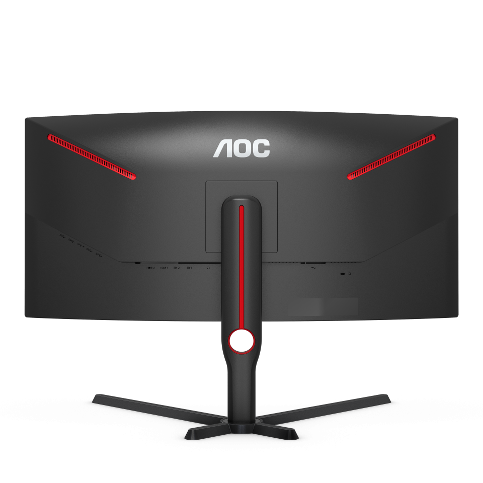
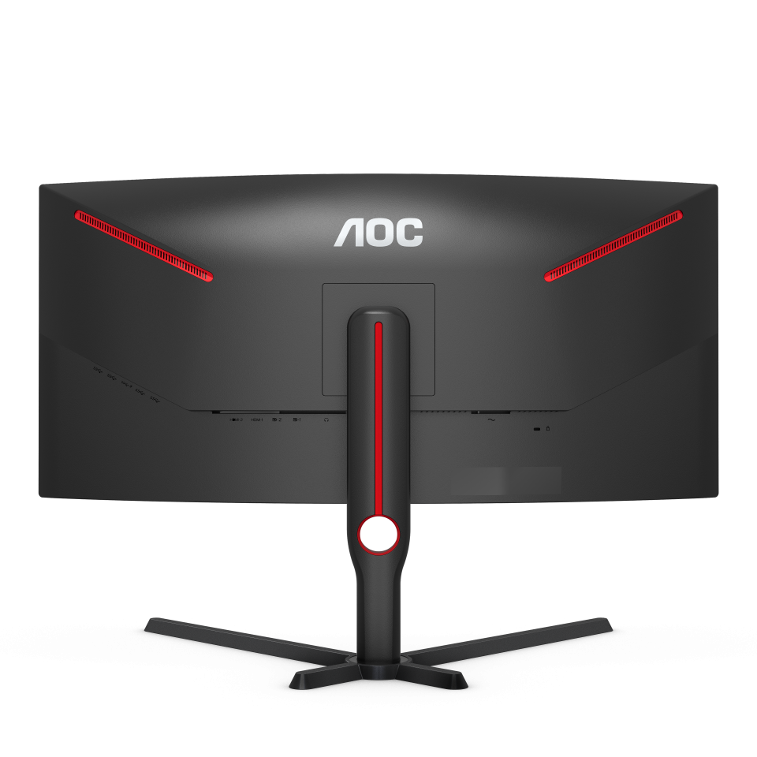

ИЗОГНУТОСТЬ
1000R
Радиус кривизны в 100R - это наибольший радиус кривизны у игровых мониторов. Он дает несколько преимуществ: снижает нагрузку на глаза, уменьшает колличество бликов, увеличивает размеры воспринимаемого изображения и создает больший эффект погружения. Окунитесь в виртуальные миры вокруг вас и получайте удовльствие от любимой игры и прекрасного обзора.

165HZ ЧАСТОТА
ОБНОВЛЕНИЯ
Частота обновления 165Гц, что более чем в два раза больше по сравнению со стандартом 60 Гц, превращает игры в истинное удовльствие. Реализуйте потенциал своего видеоадаптера. Забудьте про разрывы изображения и попрощайтесь с размытым избражением. Почувствуйте как ваши рефлексы преобразуются в непосредственные действия. Никогда не оглядывайтесь.